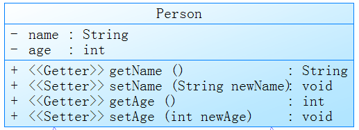

封裝性、構造器、關鍵字this、Package包
尚硅谷Java基礎課-Day10筆記
封裝的設計思想
-
高內聚:類的內部數據操作細節自己完成，不允許外部干涉
-
低耦合:對外露出少量的方法(API)供使用
舉例:微波爐，我不需要用戶控制燈光、波照、轉盤等等，只要他放入東西按下"解凍"即可。即所謂的"一鍵XX"功能。
封裝性的體現
- 將類的屬性私有化(
private)，通過公共的(public)的set與get方法讓外部調用，舉例:
public class Main {
public static void main(String[] args) {
Animal a1 = new Animal();
a1.setAge(10);
System.out.println(a1.getAge());
}
}
class Animal {
private int age;
public void setAge(int i) {
age = i;
}
public int getAge() {
return age;
}
}
- 不對外公開的私有方法(比如對外是各種排序方法，內部自己寫了一個交換兩數據位置的"小工具")
- 單例模式(將構造器私有化)
- …等等
- 需要權限修飾符來配合
權限修飾符
JAVA中有4種權限修飾符，各自的範圍是: (從小到大，下包含上)
private:限當前類內部使用default(缺省，就是不寫):同一個包名就可以調用protected:不同包它的子類可以調用public:相當於開放的
修飾的對象
- 以上4種可以用於修飾類的內部結構:屬性、方法、構造器、內部類
class本身的修飾只能是缺省或public，一個.java檔只能包含一個public類
構造器(constructor)
- 作用:創立物件、初始化物件的屬性
- 說明:如果沒有顯示定義構造器，則系統默認提供一個空參的構造器
- 格式:
權限修飾符 類名(形參列表){}，注意構造器名=類名 - 在一個類中可以定義多個構造器，彼此構成重載，舉例:
public class Main {
public static void main(String[] args) {
Animal a1 = new Animal(5);
Animal a2 = new Animal(4, "狗");
}
}
class Animal {
private int age;
private String kind;
public Animal(int a) {
age = a;
System.out.println("初始化並定義年齡為" + a);
}
public Animal(int a, String k) {
age = a;
kind = k;
System.out.println("初始化並定義年齡為" + a + "，種類為" + kind);
}
}
初始化的順序
- 默認初始化:0或null那種，例如
private int age;，new一個實例出來age默認是0 - 顯式初始化:定義屬性時直接寫好的，例如
private int age=18; - 代碼塊初始化:專門做初始化的一個
{}區(若有人手很賤把代碼塊放在顯式初始化之上，則代碼塊會比顯式先執行，但看到這樣做的人先拖出去打) - 構造器初始化，造實例時同時賦值
- 造完物件後調用賦值
JavaBean
JavaBean是一個遵循特定寫法的Java類，是一種Java語言編寫的可重用元件
它的方法命名，構造及行為必須符合特定的約定：
- 這個類必須具有一個公共的(
public)空參構造器 - 所有屬性私有化(
private) - 私有化的屬性必須通過
public型別的方法(getter和setter)暴露給其他程式，並且方法的命名也必須遵循一定的命名規範。 - 這個類應是可序列化的(比如可以實現
Serializable接口，用於實現bean的永續性)
UML類圖
Unified Modeling Language，統一建模語言，用於快速表示類

- 三個分區:從上到下為類名、屬性、方法
- 權限修飾符:
- private、+ public、# protected ()內表示形參:後表示返回值類型
關鍵字This的使用
-
可以用來修飾屬性、方法、構造器
-
this.XX，就是表明"當前物件"，用在例如:形參與屬性同名時 -
用在本類中構造器調用其他構造器，最多一個且必須聲明在首行，舉例:
private int age; private String kind; public Animal(int age) { this.age = age; System.out.println("初始化並定義年齡為" + age); } public Animal(int age, String k) { this(age); // 調用形參為age的，就是上面那個構造器 kind = k; System.out.println("，種類為" + kind); }
練習題-銀行用戶清單
-
造一個Account類，可以顯示餘額、存取錢
public class Account { private double balance; public Account(double init_balance) { this.balance = init_balance; } public double getBalance() { return balance; } public void deposit(double amt) { if (amt > 0) { balance += amt; System.out.println("存錢成功"); return; } System.out.println("金額錯誤"); } public void withdraw(double amt) { if (balance >= amt) { balance -= amt; System.out.println("取錢成功"); return; } System.out.println("金額錯誤"); } } -
造一個Customer類，可以顯示用戶名跟他名下的Account
public class Customer { private String name; private Account account; public Customer(String name) { this.name = name; } public Account getAccount() { return account; } public void setAccount(Account account) { this.account = account; } public String getName() { return name; } public void setName(String name) { this.name = name; } } -
造一個Bank類，可以存用戶列表為數組，跟用戶數量
public class Bank { private Customer[] customers; private int numberOfCustomer = 0; public Bank(int n) { customers = new Customer[n]; System.out.println("初始化了一個客戶清單，上限個數為" + n); } public void addCustomer(String name) { Customer cust = new Customer(name); customers[numberOfCustomer++] = cust; System.out.println("添加客戶成功"); } public Customer getCustomer(int index) { if (index >= 0 && index < numberOfCustomer) { return customers[index]; } return null; } public int getNumberOfCustomer() { return numberOfCustomer; } } -
調用
public class Main { public static void main(String[] args) { Bank b1 = new Bank(10); b1.addCustomer("Tom"); b1.getCustomer(0).setAccount(new Account(1000)); b1.getCustomer(0).getAccount().withdraw(400); double balance = b1.getCustomer(0).getAccount().getBalance(); System.out.println("用戶" + b1.getCustomer(0).getName() + "的餘額為" + balance); } }
MVC設計模式
太基礎不多提了
- M:數據庫，資料存這
- C:控制器，一切操作都寫這
- V:視圖，用戶實際交互的UI
Package的使用
為了方便管理，類似命名空間的概念
- 使用
package聲明類或接口所屬的包，聲明在文件首行 - 包名屬於標示符，遵循規範(全小寫aaa.bbb.ccc)，見明知意
- 每"
.“一次，代表一層文件目錄 - 同一個包下，不能存在同名的類、接口
Import的使用
- 格式:
import 包名 - 聲明在包名和類的聲明之間(第二區塊的意思)
- 可以用
XXX.*來導入XXX下所有包(一層而已，之下的子包還是需要顯式導入) - 當前包與系統預設的(如
java.lang)包可以不用寫導入 - 若想調用當前包的子包則還是需要顯式導入
- 若想調用不同包下同名的類，則需在調用時使用"全類名”，舉例:
java.lang.String import static可以導入指定類或接口下的靜態屬性或方法 (很少用)
上次修改於 2021-11-25